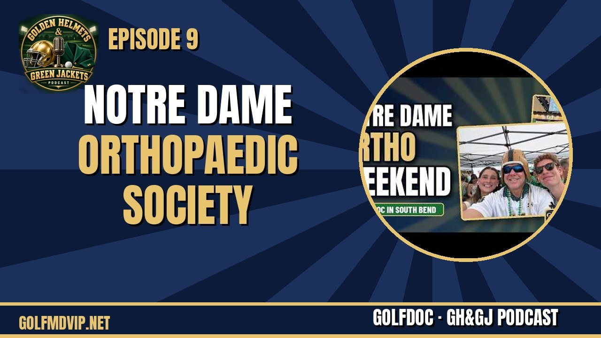

Episode 9 · Oct 17, 2026
GOLFDOC Michael Maier, M.D., live from the 30th Notre Dame Orthopaedic Society weekend
GOLFDOC takes you back to campus for the Notre Dame Orthopaedic Society 2026 weekend: highlights from the conference speakers, a Friday night out with friends near…
Watch episode →